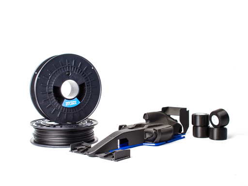

Compuestos reforzados
Filamentos con fibra de carbono
La fibra de carbono no es un material base único, sino un refuerzo dentro de otra matriz: PLA-CF, PETG-CF, PA-CF, PC-CF y más. El comportamiento final depende tanto de la base como de la carga.

Resumen rápido
Dificultad
Media a muy alta según la base del filamento.
Uso típico
Piezas más rígidas, estables y técnicas con acabado mate.
Punto fuerte
Rigidez, aspecto profesional y a veces mejor estabilidad dimensional.
Punto débil
Abrasión, coste y falsa sensación de que “todo mejora” por llevar carbono.
Qué es
Cuando un filamento lleva fibra de carbono picada, lo importante es entender primero la base. Un PLA-CF sigue heredando muchas limitaciones de PLA; un PA-CF sigue pidiendo secado serio; un PC-CF sigue siendo un técnico duro de imprimir.
Tipos de filamentos con carbono
La etiqueta CF no define por sí sola el material. Hay que leerla siempre como base + refuerzo.
PLA-CF
Más fácil, muy mate y rígido. Bueno para estética técnica y piezas rígidas ligeras, pero no resuelve temperatura ni impacto alto.
PETG-CF
Más funcional que PLA-CF para uso general. Puede reducir brillo y mejorar rigidez, aunque mantiene límites térmicos moderados.
PA-CF
Uno de los compuestos más útiles para piezas técnicas. Exige secado, boquilla endurecida y buen control de adhesión.
PC-CF / PPS-CF
Materiales de alto rendimiento para máquinas capaces. No son una buena compra si la impresora no acompaña.
Temperaturas orientativas
| Tipo | Boquilla habitual | Comentario |
|---|---|---|
| PLA-CF | 200-230 °C | Más rígido, más mate, pero no mágicamente resistente al calor. |
| PETG-CF | 230-260 °C | Puede mejorar rigidez y aspecto. |
| PA-CF | 250-300 °C | Técnico y muy sensible a humedad. |
| PC-CF | 270-320 °C | Solo para hardware serio. |
Compatibilidad y hardware
- Boquilla endurecida o de material resistente a abrasión casi obligatoria.
- Conviene usar diámetros de boquilla razonables; 0.6 mm puede ser mejor que 0.4 mm en muchos compuestos.
- La matriz base sigue mandando en cámara, cama, secado y ventilación.
Perfil base recomendado
Primero configura el material base y después ajusta por la carga de carbono. La fibra cambia flujo, abrasión y acabado, pero no elimina los requisitos principales de la matriz.
| Ajuste | Recomendación | Motivo |
|---|---|---|
| Boquilla | Endurecida, 0.4-0.6 mm | Evita desgaste y reduce riesgo de atasco. |
| Flujo | Calibrar | Las cargas alteran viscosidad y anchura real. |
| Velocidad | Moderada | Mejor acabado y menos presión en hotend. |
| Secado | Según base | Imprescindible en PA-CF, PC-CF y similares. |
Humedad y mantenimiento
Si la base es higroscópica, el compuesto también lo será o lo sufrirá de forma similar. Además, la abrasión desgasta boquilla y puede alterar el flujo si no se revisa el hardware.
Ventajas
- Acabado mate muy atractivo.
- Mayor rigidez en muchas formulaciones.
- A veces mejor estabilidad dimensional y menor deformación visual.
Límites
- Más rígido no siempre significa más fuerte a impacto.
- La abrasión puede disparar el coste real de uso.
- Muchos usuarios compran carbono esperando milagros que la matriz base no puede dar.
Usos recomendados
Convienen cuando buscas una mezcla de estética técnica, rigidez y comportamiento más estable, no solo por la etiqueta “carbono”.
Problemas típicos
Desgaste de boquilla
Es el gran clásico. Una boquilla blanda puede deteriorarse rápido y cambiar el diámetro real.
Atascos o flujo irregular
Más probables con boquillas pequeñas, material húmedo o perfiles demasiado agresivos.
Expectativas equivocadas
El compuesto mejora algunos aspectos, pero no reemplaza una buena elección de material base.
Diagnóstico rápido
- Si la pieza sale subextrudida, revisa desgaste de boquilla, temperatura y diámetro mínimo recomendado.
- Si el acabado cambia con el tiempo, mide la boquilla: puede estar gastada.
- Si la pieza parte fácil a impacto, recuerda que más rigidez puede significar menos ductilidad.
- Si hay burbujeo o líneas irregulares, seca el material si la base es higroscópica.
Compuestos CF en una Bambu A1
La A1 puede mover algunos compuestos si el hotend y la boquilla son compatibles, pero lo primero es revisar abrasión, temperatura máxima y la base exacta del filamento. No todos los “CF” son iguales ni piden lo mismo.
Cuándo elegirlo y cuándo no
Elige un compuesto con carbono cuando entiendas bien la matriz base y busques rigidez, acabado mate o estabilidad extra.
No lo elijas pensando que la fibra de carbono convierte cualquier PLA o PETG en un material industrial de alto rendimiento.
Utilidad de la página